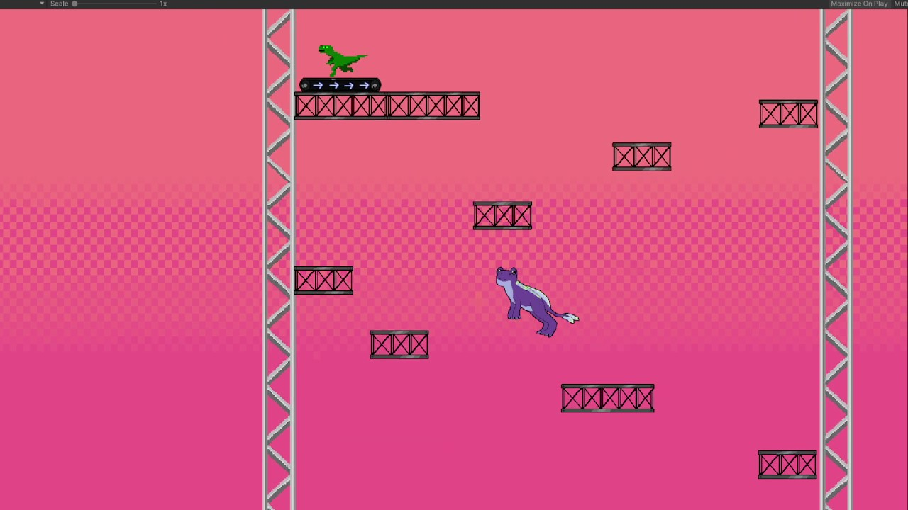
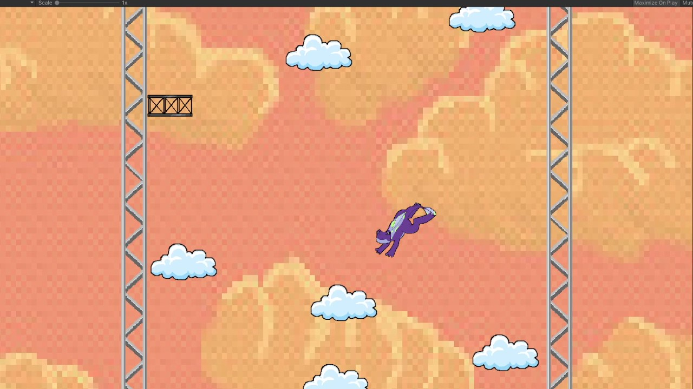

Programación
Participé en la programación de diferentes sistemas necesarios para el funcionamiento del juego y sus obstáculos.
PLATAFORMAS · 2D
Un juego de plataformas 2D donde controlas a una rana espacial que debe escalar una torre llena de obstáculos. El objetivo es seguir subiendo mientras intentas evitar caer y perder todo el progreso conseguido.

SOBRE EL PROYECTO

El Rana Juego está centrado en una idea sencilla: subir una torre lo más alto posible.
El jugador controla a una rana espacial que debe superar diferentes plataformas, obstáculos y zonas diseñadas para poner a prueba su precisión.
Caer puede significar perder una parte importante del progreso, por lo que cada salto y cada movimiento debe realizarse con cuidado.
MI PARTICIPACIÓN
Participé en la programación de diferentes sistemas necesarios para el funcionamiento del juego y sus obstáculos.
Diseñé partes de la torre pensando en la dificultad, el ritmo de ascenso y la forma en que los obstáculos se combinan entre sí.
Trabajé en la creación y distribución de los diferentes obstáculos con el objetivo de generar desafíos variados durante la subida y poner a prueba la habilidad del jugador.
GAMEPLAY
El objetivo principal es avanzar constantemente hacia arriba recorriendo la torre.
El jugador debe calcular sus movimientos para llegar a nuevas plataformas sin perder altura.
Diferentes elementos dificultan la subida y obligan al jugador a adaptarse a cada zona.
Un error puede hacer que el jugador caiga varios niveles, generando tensión durante la escalada.
GALERÍA


